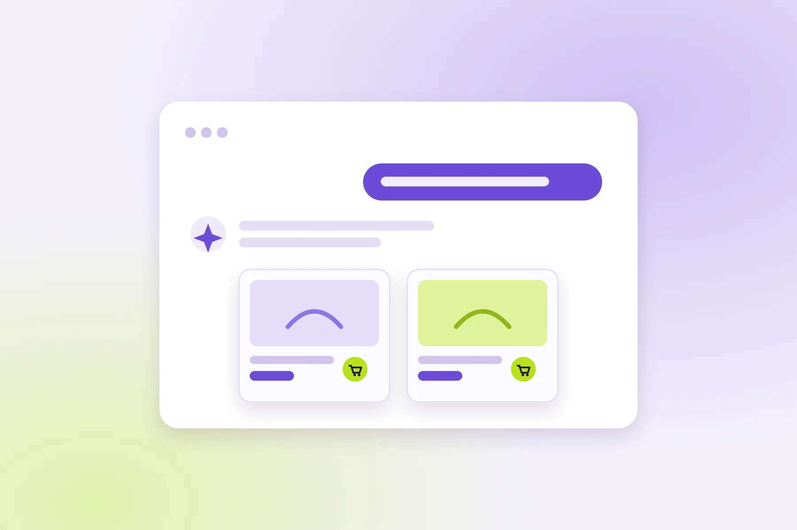

Shopify Agentic Storefronts: Ürünlerinizi ChatGPT, Copilot ve Google AI Modu'nda Satmak
Kullanıcılar artık ürünleri ChatGPT'ye, Copilot'a ve Google AI Modu'na sorarak buluyor ve satın alıyor. Shopify'ın Agentic Storefronts kanalı mağazanızı bu asistanlara bağlıyor. Bu yazıda özelliğin nasıl çalıştığını, Türkiye'deki mağazalar için ne anlama geldiğini ve ürünlerinizin önerilmesi için verinizi nasıl hazırlamanız gerektiğini anlatıyorum.

E-ticarette ürün keşfi uzun süre iki kanaldan yürüdü: arama motorları ve sosyal medya. 2026'da üçüncü bir kanal ciddi şekilde devreye girdi: kullanıcının ChatGPT'ye, Microsoft Copilot'a ya da Google'ın AI Modu'na "300 dolar altı, su geçirmez bir yürüyüş botu öner" diye yazdığı ve yanıtın içinde ürünleri görüp satın alabildiği sohbetler.
Shopify'ın bu kanala cevabı Agentic Storefronts. Bu yazıda özelliğin ne yaptığını, hangi kanallarda ve kimler için çalıştığını, Türkiye'deki mağazalar için ne anlama geldiğini ve en önemlisi yapay zeka asistanlarının ürünlerinizi önermesi için ürün verinizi nasıl hazırlamanız gerektiğini anlatıyorum.
1. Agentic commerce nedir?
Agentic commerce (ajan tabanlı ticaret), alışverişin bir kısmının ya da tamamının kullanıcı adına hareket eden bir yapay zeka asistanı üzerinden yapılmasıdır. Asistan kullanıcının ihtiyacını anlar, uygun ürünleri bulur, fiyat ve stok bilgisini kontrol eder ve satın alma adımına kadar süreci yönetir.
Buradaki kritik değişiklik şu: Ürününüzü artık bir insan değil, önce bir yazılım "okuyor". Asistan, ürün başlığınızdan, açıklamanızdan, varyantlarınızdan ve stok bilginizden yola çıkarak ürününüzün kullanıcının sorusuna uyup uymadığına karar veriyor. Eksik ya da belirsiz veri, ürünün hiç önerilmemesi anlamına gelebiliyor.
2. Shopify Agentic Storefronts ne yapıyor?
Agentic Storefronts, Shopify yönetim panelinde bir satış kanalı olarak çalışıyor ve mağazanızın ürünlerini yapay zeka alışveriş platformlarına bağlıyor. Shopify'ın resmi açıklamasına göre öne çıkan özellikleri şunlar:
- Kurulum gerektirmiyor: Uygun mağazalarda otomatik olarak etkin; ek uygulama ya da özel entegrasyon gerekmiyor.
- Ürünler otomatik senkronize oluyor: Yönetim panelinde fiyat, stok ve açıklamada yaptığınız değişiklikler AI kanallarına kendiliğinden yansıyor.
- Ek işlem ücreti yok: Shopify'a göre standart ödeme işleme ücretleri dışında bir ücret alınmıyor.
- Kontrol sizde: Ürün verinizin hangi AI ortaklarına gideceğini seçebilir ya da Shopify'ın mevcut ve gelecekteki kanallara otomatik dağıtmasına izin verebilirsiniz.
- Müşteri sizin: Siparişler Shopify yönetim panelinize AI kanalı etiketiyle düşüyor; satıcı (merchant of record) siz oluyorsunuz ve müşteri ilişkisi sizde kalıyor.
3. Hangi kanallarda, kimler için çalışıyor?
| Kanal | Durum | Satın alma nasıl tamamlanıyor? |
|---|---|---|
| ChatGPT (OpenAI) | ABD'deki alıcılara satış yapan uygun mağazalar için yayında | Uygulama içi tarayıcıda, mağazanızın kendi ödeme sayfasında |
| Microsoft Copilot | Shopify Catalog'da bulunan uygun mağazalar için yayında | Uygun mağazalarda doğrudan Copilot içinde (Copilot Checkout) |
| Google AI Modu ve Gemini | ABD'deki seçili markalarla başladı, genişleme sürüyor | Google arayüzü içine gömülü ödeme |
Copilot, AI Modu ve Gemini için doğrudan ödemeyi kanal bazında açıp kapatabiliyorsunuz; kapalıysa alıcı mağazanıza yönlendiriliyor. ChatGPT tarafında doğrudan ödeme seçeneği yok; satın alma her zaman mağazanızın ödeme sayfasında tamamlanıyor.
4. Türkiye'deki mağazalar için ne anlama geliyor?
Şu an için en önemli sınırlama alıcının konumu: AI kanallarındaki satın almalar yalnızca ABD'deki alıcılarla sınırlı. Mağazanın nerede olduğu ise ChatGPT ve Copilot için belirleyici değil; Shopify, ABD'ye satış yapan Catalog mağazalarının mağaza konumundan bağımsız olarak bu kanallara katılabildiğini belirtiyor.
Bu durumda tablo şöyle:
- ABD'ye ihracat yapan Türk markaları (tekstil, ev dekorasyonu, kozmetik, takı gibi) bugün itibarıyla bu kanallardan yararlanabilir. Bu markalar için ürün verisini İngilizce ve AI asistanlarının anlayacağı netlikte hazırlamak doğrudan satış fırsatı.
- Yalnızca Türkiye'ye satış yapan mağazalar için kanal henüz satış getirmiyor. Ancak Google AI Modu Şubat 2026'dan beri Türkiye'de Türkçe kullanılıyor ve ürün karşılaştırma sorularında zaten ürün sayfalarından besleniyor. Aşağıdaki veri hazırlığı, kanal Türkiye'ye geldiğinde hazır olmanın yanı sıra bugün AI Modu'nda ve klasik aramada görünürlüğü de artırıyor.
5. Perde arkası: Shopify Catalog ve UCP
Sistemin iki temel parçası var:
- Shopify Catalog: Milyonlarca mağazanın milyarlarca ürününü ortak bir sınıflandırma (taksonomi) ile yapılandıran veri katmanı. Fiyat ve stok bilgisini gerçek zamanlı doğruluyor ve bağlı AI platformlarına dağıtıyor. Uygun ürünler varsayılan olarak listeleniyor. Catalog, eksik ürün özelliklerini makine öğrenmesiyle tahmin edebiliyor; özel veri yapısı kullanan mağazalar Catalog Mapping ile alanlarını eşleştirebiliyor.
- Universal Commerce Protocol (UCP): Shopify ve Google'ın birlikte geliştirdiği açık standart. AI ajanlarının sepet oluşturma, ödeme ve satış sonrası adımları farklı platformlarda aynı şekilde yürütmesini sağlıyor. Destekleyenler arasında Amazon, Etsy, Mastercard, Meta, Microsoft, Stripe, Target, Walmart ve Visa var. İndirim kurallarınız ve satış koşullarınız tüm ajanlarda tutarlı kalıyor.
6. AI asistanlarının ürününüzü önermesi için veri hazırlığı
Shopify, agentic commerce için ürün verisini değiştirmeniz gerekmediğini, Catalog'un veriyi otomatik olarak yapılandırdığını söylüyor. Bu doğru, ama "çalışması" ile "önerilmesi" farklı şeyler. Asistanlar, kullanıcının sorusuna hangi ürünün uyduğuna karar verirken verinin eksiksizliğine ve netliğine bakıyor. Shopify da başlık, açıklama, görsel, fiyat, stok ve kargo bilgisinin eksiksiz ve doğru olmasını vurguluyor. Pratikte kontrol listem şöyle:
- Başlıkta ürünün ne olduğunu söyleyin. "Luna 01" değil, "Luna Su Geçirmez Deri Kadın Yürüyüş Botu". Asistan, sadece marka ya da model koduyla ürünün ne olduğunu çıkarmakta zorlanır.
- Açıklamada kullanıcının soracağı soruları cevaplayın. Malzeme, ölçüler, kullanım alanı, bakım, kime uygun olduğu, neyle uyumlu olduğu. Pazarlama sloganı yerine somut bilgi.
- Varyantları temiz tutun. Seçenek adları tutarlı olsun ("Beden", "Renk"); "Seçenek 1" gibi varsayılan adlar ve aynı rengin farklı yazımları veriyi bulanıklaştırır.
- Ürün türünü ve kategoriyi doğru atayın. Shopify'ın standart ürün taksonomisinde doğru kategoriyi seçmek, ürünün doğru sorularla eşleşmesine yardım eder.
- Stok ve fiyatı gerçek zamanlı tutun. Asistanlar stokta olmayan ürünü önermek istemez; senkronizasyonu bozan üçüncü parti stok uygulamalarını kontrol edin.
- Kargo, iade ve teslimat süresini netleştirin. "ABD'ye kaç günde gelir?" sorusu satın alma kararının parçası.
- Görselleri ve alt metinleri tamamlayın. Birden fazla açıdan, ürünü net gösteren görseller ve ne gösterdiğini anlatan alt metinler.
- Ürün sayfasındaki yapılandırılmış veriyi kontrol edin.
ProductveOfferişaretlemesi sayfadaki fiyat ve stokla birebir uyumlu olmalı. Shopify'ın ücretsiz agentic hazırlık denetim aracı da ürün sayfalarında yapılandırılmış veriyi ve robots.txt erişimini kontrol ediyor. - Tema performansını ihmal etmeyin. Ödeme mağazanızda tamamlandığında yavaş bir sayfa satışı kaybettirir; bu konuda Shopify Liquid performansı yazımdaki adımlar burada da geçerli.
İpucu: Hazırlığı test etmenin pratik bir yolu, bir ürününüzü ChatGPT'ye ya da Google AI Modu'na kendi müşterinizin soracağı şekilde aratmak ("100 dolar altı, makinede yıkanabilir keten masa örtüsü" gibi) ve rakiplerinizin hangi bilgilerle önerildiğine bakmak. Önerilen ürünlerin sayfalarında olup sizde olmayan bilgi, ilk düzeltmeniz gereken eksiktir.
7. Sonuçları nasıl ölçersiniz?
AI kanallarından gelen siparişler Shopify yönetim panelinde ilgili kanal etiketiyle görünüyor; bu, kanal performansını izlemenin en güvenilir yolu. Buna ek olarak:
- Google Analytics 4'te
chatgpt.com,copilot.microsoft.comgibi yönlendiren kaynakları ayrı bir "AI asistanları" kanal grubunda toplayın. - Search Console'daki Üretken AI raporuyla ürün ve kategori sayfalarınızın Google AI Modu'nda ne sıklıkla göründüğünü takip edin. Bu raporu Google AI Modu ve SEO yazımda ayrıntılı anlattım.
- AI kanallarından gelen siparişlerin ortalama sepet tutarını ve iade oranını diğer kanallarla karşılaştırın.
Kanalın potansiyeli hakkında fikir vermesi için: Shopify'ın paylaştığı verilere göre 2026'nın ilk çeyreğinde Shopify mağazalarına yapay zeka kaynaklı trafik bir önceki yıla göre 8 kat, yapay zeka destekli aramalardan gelen siparişler ise yaklaşık 13 kat arttı. Bu rakamlar düşük bir başlangıç noktasından gelen büyümeyi gösteriyor; kendi mağazanızdaki payı mutlaka kendi verinizle ölçün.
Sonuç
Agentic Storefronts, Shopify mağazalarının büyük bölümü için "aç ve unut" türünden bir özellik gibi görünse de, asıl fark ürün verisinin kalitesinde ortaya çıkıyor. Aynı kanala bağlı iki mağazadan, ürününü net ve eksiksiz tarif eden önerilir. ABD'ye satış yapan markalar için bu bugünün satış fırsatı; Türkiye pazarına odaklı mağazalar için ise hem AI Modu'ndaki görünürlüğü artıran hem de kanal genişlediğinde hazır olmayı sağlayan bir hazırlık.
Başlamak için en çok satan 10 ürününüzün başlığını, açıklamasını ve varyant adlarını yukarıdaki listeye göre gözden geçirin. Çoğu mağazada en büyük kazanç, en çok satan ürünlerin verisini düzeltmekten geliyor.
Sık sorulan sorular
Shopify Agentic Storefronts ücretli mi?
Shopify'a göre Agentic Storefronts için standart ödeme işleme ücretleri dışında ek bir işlem ücreti alınmıyor ve kurulum gerektirmiyor; uygun mağazalarda kanal otomatik olarak etkin.
Türkiye'deki bir Shopify mağazası ChatGPT'de satış yapabilir mi?
Mağaza konumu ChatGPT ve Copilot için belirleyici değil, ancak AI kanallarındaki satın almalar şu an yalnızca ABD'deki alıcılarla sınırlı. Yani ABD'ye satış yapan Türk markaları bu kanallardan yararlanabilir; yalnızca Türkiye'ye satış yapan mağazalar için kanal henüz satış getirmiyor.
ChatGPT'den gelen siparişte ödeme nerede yapılıyor?
ChatGPT'de satın alma, uygulama içi tarayıcıda mağazanızın kendi Shopify ödeme sayfasında tamamlanıyor. Copilot, Google AI Modu ve Gemini'de ise uygun mağazalar için asistanın içine gömülü ödeme kullanılabiliyor; bu seçenek kanal bazında açılıp kapatılabiliyor.
Ürünlerimin AI asistanları tarafından önerilmesi için ne yapmalıyım?
Ürün başlığında ürünün ne olduğunu açıkça yazın, açıklamada malzeme, ölçü ve kullanım gibi somut bilgileri verin, varyant adlarını tutarlı tutun, doğru kategori atayın, stok ve fiyatı güncel tutun ve kargo ile iade bilgilerini netleştirin. Ürün sayfasındaki Product yapılandırılmış verisi de sayfadaki bilgilerle uyumlu olmalı.